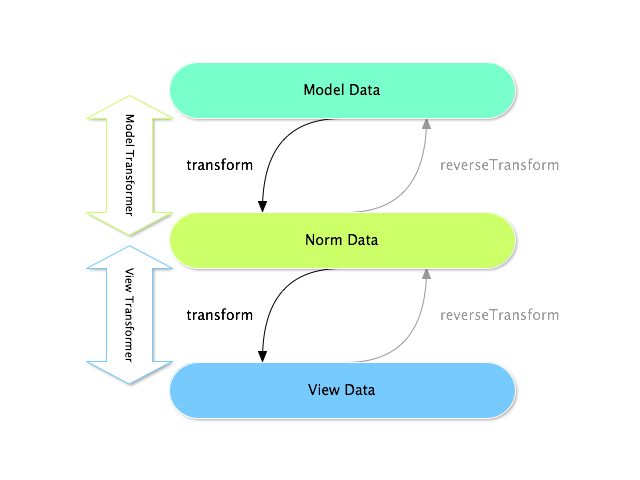

How to Use Data Transformers¶
Data transformers are used to translate the data for a field into a format that can
be displayed in a form (and back on submit). They’re already used internally for
many field types. For example, the DateType field
can be rendered as a yyyy-MM-dd-formatted input text box. Internally, a data transformer
converts the starting DateTime value of the field into the yyyy-MM-dd string
to render the form, and then back into a DateTime object on submit.
Caution
When a form field has the inherit_data option set to true, data transformers
are not applied to that field.
See also
If, instead of transforming the representation of a value, you need to map values to a form field and back, you should use a data mapper. Check out When and How to Use Data Mappers.
Example #1: Transforming Strings Form Data Tags from User Input to an Array¶
Suppose you have a Task form with a tags text type:
// src/Form/Type/TaskType.php
namespace App\Form\Type;
use App\Entity\Task;
use Symfony\Component\Form\Extension\Core\Type\TextType;
use Symfony\Component\Form\FormBuilderInterface;
use Symfony\Component\OptionsResolver\OptionsResolver;
// ...
class TaskType extends AbstractType
{
public function buildForm(FormBuilderInterface $builder, array $options): void
{
$builder->add('tags', TextType::class);
}
public function configureOptions(OptionsResolver $resolver): void
{
$resolver->setDefaults([
'data_class' => Task::class,
]);
}
// ...
}
Internally the tags are stored as an array, but displayed to the user as a
plain comma separated string to make them easier to edit.
This is a perfect time to attach a custom data transformer to the tags
field. The easiest way to do this is with the CallbackTransformer
class:
// src/Form/Type/TaskType.php
namespace App\Form\Type;
use Symfony\Component\Form\CallbackTransformer;
use Symfony\Component\Form\Extension\Core\Type\TextType;
use Symfony\Component\Form\FormBuilderInterface;
// ...
class TaskType extends AbstractType
{
public function buildForm(FormBuilderInterface $builder, array $options): void
{
$builder->add('tags', TextType::class);
$builder->get('tags')
->addModelTransformer(new CallbackTransformer(
function ($tagsAsArray) {
// transform the array to a string
return implode(', ', $tagsAsArray);
},
function ($tagsAsString) {
// transform the string back to an array
return explode(', ', $tagsAsString);
}
))
;
}
// ...
}
The CallbackTransformer takes two callback functions as arguments. The
first transforms the original value into a format that’ll be used to render the
field. The second does the reverse: it transforms the submitted value back into
the format you’ll use in your code.
Tip
The addModelTransformer() method accepts any object that implements
DataTransformerInterface - so you can create
your own classes, instead of putting all the logic in the form (see the next section).
You can also add the transformer, right when adding the field by changing the format slightly:
use Symfony\Component\Form\Extension\Core\Type\TextType;
$builder->add(
$builder
->create('tags', TextType::class)
->addModelTransformer(...)
);
Example #2: Transforming an Issue Number into an Issue Entity¶
Say you have a many-to-one relation from the Task entity to an Issue entity (i.e. each Task has an optional foreign key to its related Issue). Adding a list box with all possible issues could eventually get really long and take a long time to load. Instead, you decide you want to add a text box, where the user can enter the issue number.
Start by setting up the text field like normal:
// src/Form/Type/TaskType.php
namespace App\Form\Type;
use App\Entity\Task;
use Symfony\Component\Form\Extension\Core\Type\TextareaType;
use Symfony\Component\Form\Extension\Core\Type\TextType;
// ...
class TaskType extends AbstractType
{
public function buildForm(FormBuilderInterface $builder, array $options): void
{
$builder
->add('description', TextareaType::class)
->add('issue', TextType::class)
;
}
public function configureOptions(OptionsResolver $resolver): void
{
$resolver->setDefaults([
'data_class' => Task::class,
]);
}
// ...
}
Good start! But if you stopped here and submitted the form, the Task’s issue
property would be a string (e.g. “55”). How can you transform this into an Issue
entity on submit?
Creating the Transformer¶
You could use the CallbackTransformer like earlier. But since this is a bit more
complex, creating a new transformer class will keep the TaskType form class simpler.
Create an IssueToNumberTransformer class: it will be responsible for converting
to and from the issue number and the Issue object:
// src/Form/DataTransformer/IssueToNumberTransformer.php
namespace App\Form\DataTransformer;
use App\Entity\Issue;
use Doctrine\ORM\EntityManagerInterface;
use Symfony\Component\Form\DataTransformerInterface;
use Symfony\Component\Form\Exception\TransformationFailedException;
class IssueToNumberTransformer implements DataTransformerInterface
{
private $entityManager;
public function __construct(EntityManagerInterface $entityManager)
{
$this->entityManager = $entityManager;
}
/**
* Transforms an object (issue) to a string (number).
*
* @param Issue|null $issue
*/
public function transform($issue): string
{
if (null === $issue) {
return '';
}
return $issue->getId();
}
/**
* Transforms a string (number) to an object (issue).
*
* @param string $issueNumber
* @throws TransformationFailedException if object (issue) is not found.
*/
public function reverseTransform($issueNumber): ?Issue
{
// no issue number? It's optional, so that's ok
if (!$issueNumber) {
return;
}
$issue = $this->entityManager
->getRepository(Issue::class)
// query for the issue with this id
->find($issueNumber)
;
if (null === $issue) {
// causes a validation error
// this message is not shown to the user
// see the invalid_message option
throw new TransformationFailedException(sprintf(
'An issue with number "%s" does not exist!',
$issueNumber
));
}
return $issue;
}
}
Like the first example, the transformer has two directions. The transform()
method is responsible for converting the data used in your code to a format that
can be rendered in your form (e.g. an Issue object to its id, a string).
The reverseTransform() method does the reverse: it converts the submitted value
back into the format you want (e.g. convert the id back to the Issue object).
To cause a validation error, throw a TransformationFailedException.
But the message you pass to this exception won’t be shown to the user. You’ll set
that message with the invalid_message option (see below).
Note
When null is passed to the transform() method, your transformer
should return an equivalent value of the type it is transforming to (e.g.
an empty string, 0 for integers or 0.0 for floats).
Using the Transformer¶
Next, you need to use the IssueToNumberTransformer object inside of TaskType
and add it to the issue field. No problem! Add a __construct() method
and type-hint the new class:
// src/Form/Type/TaskType.php
namespace App\Form\Type;
use App\Form\DataTransformer\IssueToNumberTransformer;
use Symfony\Component\Form\Extension\Core\Type\TextareaType;
use Symfony\Component\Form\Extension\Core\Type\TextType;
// ...
class TaskType extends AbstractType
{
private $transformer;
public function __construct(IssueToNumberTransformer $transformer)
{
$this->transformer = $transformer;
}
public function buildForm(FormBuilderInterface $builder, array $options): void
{
$builder
->add('description', TextareaType::class)
->add('issue', TextType::class, [
// validation message if the data transformer fails
'invalid_message' => 'That is not a valid issue number',
]);
// ...
$builder->get('issue')
->addModelTransformer($this->transformer);
}
// ...
}
Whenever the transformer throws an exception, the invalid_message is shown
to the user. Instead of showing the same message every time, you can set the
end-user error message in the data transformer using the
setInvalidMessage() method. It also allows you to include user values:
// src/Form/DataTransformer/IssueToNumberTransformer.php
namespace App\Form\DataTransformer;
use Symfony\Component\Form\DataTransformerInterface;
use Symfony\Component\Form\Exception\TransformationFailedException;
class IssueToNumberTransformer implements DataTransformerInterface
{
// ...
public function reverseTransform($issueNumber): ?Issue
{
// ...
if (null === $issue) {
$privateErrorMessage = sprintf('An issue with number "%s" does not exist!', $issueNumber);
$publicErrorMessage = 'The given "{{ value }}" value is not a valid issue number.';
$failure = new TransformationFailedException($privateErrorMessage);
$failure->setInvalidMessage($publicErrorMessage, [
'{{ value }}' => $issueNumber,
]);
throw $failure;
}
return $issue;
}
}
That’s it! If you’re using the
default services.yaml configuration,
Symfony will automatically know to pass your TaskType an instance of the
IssueToNumberTransformer thanks to autowire and
autoconfigure.
Otherwise, register the form class as a service
and tag it with the form.type tag.
Now, you can use your TaskType:
// e.g. somewhere in a controller
$form = $this->createForm(TaskType::class, $task);
// ...
Cool, you’re done! Your user will be able to enter an issue number into the
text field, which will be transformed back into an Issue object. This means
that, after a successful submission, the Form component will pass a real
Issue object to Task::setIssue() instead of the issue number.
If the issue isn’t found, a form error will be created for that field and
its error message can be controlled with the invalid_message field option.
Caution
Be careful when adding your transformers. For example, the following is wrong, as the transformer would be applied to the entire form, instead of just this field:
// THIS IS WRONG - TRANSFORMER WILL BE APPLIED TO THE ENTIRE FORM
// see above example for correct code
$builder->add('issue', TextType::class)
->addModelTransformer($transformer);
Creating a Reusable issue_selector Field¶
In the above example, you applied the transformer to a normal text field. But
if you do this transformation a lot, it might be better to
create a custom field type.
that does this automatically.
First, create the custom field type class:
// src/Form/IssueSelectorType.php
namespace App\Form;
use App\Form\DataTransformer\IssueToNumberTransformer;
use Symfony\Component\Form\AbstractType;
use Symfony\Component\Form\Extension\Core\Type\TextType;
use Symfony\Component\Form\FormBuilderInterface;
use Symfony\Component\OptionsResolver\OptionsResolver;
class IssueSelectorType extends AbstractType
{
private $transformer;
public function __construct(IssueToNumberTransformer $transformer)
{
$this->transformer = $transformer;
}
public function buildForm(FormBuilderInterface $builder, array $options): void
{
$builder->addModelTransformer($this->transformer);
}
public function configureOptions(OptionsResolver $resolver): void
{
$resolver->setDefaults([
'invalid_message' => 'The selected issue does not exist',
]);
}
public function getParent(): string
{
return TextType::class;
}
}
Great! This will act and render like a text field (getParent()), but will automatically
have the data transformer and a nice default value for the invalid_message option.
As long as you’re using autowire and autoconfigure, you can start using the form immediately:
// src/Form/Type/TaskType.php
namespace App\Form\Type;
use App\Form\DataTransformer\IssueToNumberTransformer;
use Symfony\Component\Form\Extension\Core\Type\TextareaType;
// ...
class TaskType extends AbstractType
{
public function buildForm(FormBuilderInterface $builder, array $options): void
{
$builder
->add('description', TextareaType::class)
->add('issue', IssueSelectorType::class)
;
}
// ...
}
Tip
If you’re not using autowire and autoconfigure, see
How to Create a Custom Form Field Type for how to configure your new IssueSelectorType.
About Model and View Transformers¶
In the above example, the transformer was used as a “model” transformer. In fact, there are two different types of transformers and three different types of underlying data.
In any form, the three different types of data are:
- Model data - This is the data in the format used in your application
(e.g. an
Issueobject). If you callForm::getData()orForm::setData(), you’re dealing with the “model” data. - Norm Data - This is a normalized version of your data and is commonly the same as your “model” data (though not in our example). It’s not commonly used directly.
- View Data - This is the format that’s used to fill in the form fields
themselves. It’s also the format in which the user will submit the data. When
you call
Form::submit($data), the$datais in the “view” data format.
The two different types of transformers help convert to and from each of these types of data:
- Model transformers:
transform(): “model data” => “norm data”reverseTransform(): “norm data” => “model data”
- View transformers:
transform(): “norm data” => “view data”reverseTransform(): “view data” => “norm data”
Which transformer you need depends on your situation.
To use the view transformer, call addViewTransformer().
So why Use the Model Transformer?¶
In this example, the field is a text field, and a text field is always
expected to be a simple, scalar format in the “norm” and “view” formats. For
this reason, the most appropriate transformer was the “model” transformer
(which converts to/from the norm format - string issue number - to the model
format - Issue object).
The difference between the transformers is subtle and you should always think
about what the “norm” data for a field should really be. For example, the
“norm” data for a text field is a string, but is a DateTime object
for a date field.
Tip
As a general rule, the normalized data should contain as much information as possible.